지금 사용할 수 있는 일반판 1.19의 새 기능부터 살펴보세요. Pro 편집·변환·인터넷 공유는 별도 구매가 필요한 출시 예정 기능으로 구분했습니다.
01 / FILE BROWSING
필요한 폴더를 나란히 여세요.

- 레이아웃에서 좌우 2분할, 상하 2분할, 4분할 등 배치를 고릅니다. 13가지 배치와 최대 6개 패널을 지원합니다.
- 각 창을 클릭한 뒤 즐겨찾기나 위치에서 폴더를 선택합니다. 다른 창의 위치는 그대로 유지됩니다.
- 창 사이 구분선을 드래그해 크기를 조절합니다. 구분선을 두 번 클릭하면 기본 비율로 돌아옵니다.
- 상단 점 모양 손잡이를 다른 창으로 드래그하면 창 위치를 교환합니다. 창 메뉴의 창 닫기로 패널을 줄일 수 있습니다.

탭과 경로 이동
각 창 상단의 ＋ 또는 ⌘T로 탭을 추가합니다. 탭마다 다른 폴더를 열 수 있습니다. 위쪽 경로에서 상위 폴더 이름을 누르면 바로 이동하며, 현재 폴더 이름이나 빈 공간을 클릭하거나 ⌘L을 눌러 주소를 직접 입력할 수 있습니다. 뒤로·앞으로 버튼과 상위 폴더 메뉴도 사용할 수 있습니다.
02 / TEMPORARY SHELF
임시보관함: 모아 두고, 한 번에 정리하세요.
여러 폴더에 흩어진 파일을 모아 둘 때 사용합니다. 원본을 옮기지 않고 보관 목록에 담은 뒤, 원하는 폴더에 한꺼번에 복사할 수 있습니다.

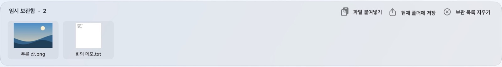
파일을 보관함으로 드래그하거나, 파일을 복사한 후 파일 붙여넣기를 누릅니다. 선택 파일의 우클릭 메뉴에서 임시 보관함에 추가도 가능합니다. 폴더와 폴더 링크도 추가할 수 있습니다. 클립보드의 이미지는 분할 창이나 보관함을 클릭하고 ⌘V를 누르면 이미지 파일로 저장됩니다.
파일을 받을 창을 클릭하고 목적지 폴더를 엽니다. 강조된 테두리를 확인하세요.
현재 폴더에 저장을 누르면 보관된 항목 전체가 선택한 로컬 폴더에 복사됩니다. 개별 항목을 원하는 폴더로 드래그해서 꺼낼 수도 있습니다.
목록만 비웁니다. 임시보관함은 파일의 별도 백업이 아니므로 원본 파일을 지우거나 외장 디스크 연결을 해제하면 해당 파일을 사용할 수 없습니다. 목록은 앱을 다시 실행해도 유지됩니다.
왼쪽 도구 → 플로팅 보관함으로 작은 독립 창을 띄울 수 있습니다. 설정에서 보관함 버튼을 아이콘 + 이름 또는 아이콘만으로 바꿀 수 있습니다. 맥 파인더·윈도우 탐색기 스타일에서는 하단 보관함이 숨겨집니다.
설정에서 임시보관함 사용 여부를 선택하세요. 기본값은 사용이며, 사용 안함을 선택하면 파일 영역이 아래로 확장됩니다. 보관함을 숨겨도 원본 파일은 삭제되지 않습니다.
03 / PREVIEW
열기 전에 내용을 확인하세요.

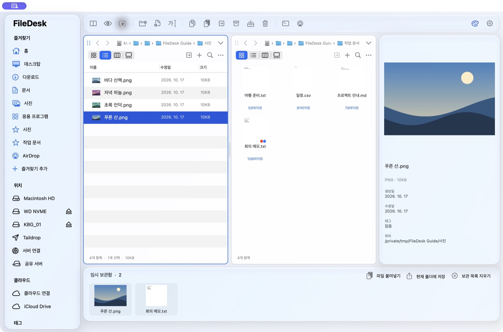
각 창의 보기 버튼으로 아이콘·목록·열·갤러리 보기를 선택합니다. 이미지·영상·음악·문서는 macOS가 지원하는 썸네일로 표시하며, 지원하지 않는 형식은 해당 파일 아이콘으로 표시합니다.
- 미리보기 패널: 파일을 선택하고 상단 파일 정보 버튼 또는 … → 미리보기 옵션 → 미리보기 패널을 켭니다.
- 동영상·음악 재생: 지원하는 미디어 파일의 재생 버튼 또는 우클릭 재생을 사용하면 FileDesk 안에서 재생합니다. MP4·MOV·MP3는 물론 MKV·WebM·AVI도 창 안에서 재생합니다(MKV 등은 재생하면서 변환하므로 변환된 구간까지 이동할 수 있습니다). 재생하지 못하는 파일은 설치된 재생 앱(IINA·VLC 등)으로 엽니다. 네트워크 드라이브(WebDAV 등)에서는 목록을 먼저 파일 종류 아이콘으로 표시하고, 사진과 MP4 등의 미리보기 이미지는 뒤에서 차례로 채웁니다.
- Quick Look: 파일을 선택하고 스페이스바 또는 훑어보기를 누릅니다. SRT 자막은 타임코드와 본문을 보여 줍니다. 방향키로 다음 파일을 볼 수 있습니다.
- 폴더 상태: 빈 폴더와 파일이 들어 있는 폴더를 아이콘과 항목 수로 구분합니다.
Quick Look에서 ⌘⌫로 선택 파일을 휴지통에 보내면 다음 파일의 선택과 미리보기가 이어집니다. 마지막 파일을 지우면 이전 파일로 이동하며, 목록이 비면 미리보기가 닫힙니다.
04 / EVERYDAY WORK
복사부터 검색까지, 선택한 창에서.
파일 우클릭과 창의 … 버튼은 같은 작업 메뉴를 엽니다. 작업 전에 테두리가 강조된 창과 선택한 파일을 확인하세요.
파일 작업
새 파일·폴더, 복사·이동·복제, 드래그 앤 드롭, 휴지통으로 이동을 지원합니다. FileDesk 스타일에서는 상단 복사·붙여넣기·이동 버튼을 사용할 수 있습니다. 같은 이름이 있으면 충돌 처리 방법을 확인합니다. 드래그는 Finder와 같습니다. 같은 디스크 안에서는 이동, 다른 디스크로는 복사하며, ⌥를 누르면 복사, ⌘를 누르면 이동합니다. 휴지통으로 이동할 때 확인 창은 기본으로 표시하지 않으며, 파일 메뉴의 휴지통으로 이동 전 확인으로 켤 수 있습니다. 지원되는 로컬 파일 작업은 ⌘Z로 되돌리고 ⇧⌘Z로 다시 실행합니다. 최대 30단계의 기록이 앱 재시작 후에도 유지됩니다.
찾기와 정렬
⌘F로 현재 로컬 패널을 검색합니다. 이름·태그, 여러 검색어와 !제외어를 사용할 수 있습니다. 검색창의 돋보기 메뉴에서 하위 폴더 포함을 선택하면 현재 폴더 아래도 검색합니다. … → 다음으로 정렬에서 이름·수정일·크기·종류와 내림차순을 선택합니다. 폴더를 먼저 모으려면 폴더 먼저 표시를 켜세요.
그룹 사용과 다음으로 그룹화에서 종류·이름·수정일·크기에 따라 파일을 묶어 볼 수 있습니다. 보기 옵션 → 숨김 파일 표시로 숨김 파일을 표시합니다. 연결된 클라우드·FTP/SFTP 창은 원격 목록 탐색과 이름 검색, 업로드·다운로드 중심으로 동작합니다.
05 / BATCH RENAME
바뀔 이름을 먼저 확인하세요.

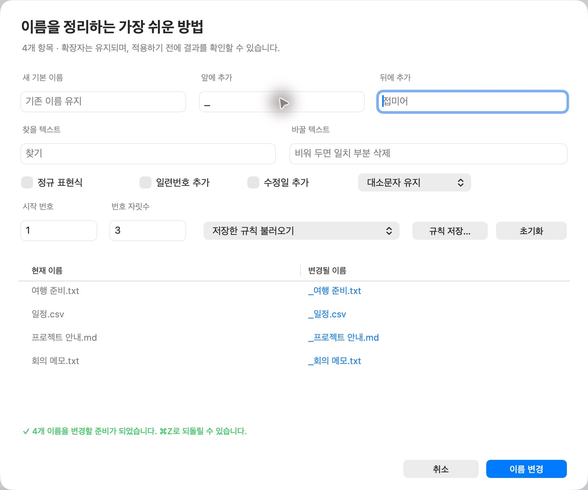
여러 파일을 선택한 뒤 이름 변경을 누르거나 … → 추가 작업 → 고급 일괄 이름 변경을 엽니다. 기본 이름, 접두어·접미어, 찾기·바꾸기·삭제, 정규식, 번호와 자릿수, 수정일, 대소문자를 조합할 수 있습니다. 자주 쓰는 규칙은 저장했다가 다시 불러옵니다.
파일 하나는 F2로 바로 이름을 편집할 수 있습니다. Mac의 기능 키 설정에 따라 fn을 함께 눌러야 할 수 있습니다.
06 / COLOR & IDENTITY
태그, 폴더 색상, 가운데 이미지.
Finder와 함께 쓰는 색상 태그
파일을 우클릭해 동그란 색상 태그를 누릅니다. 여러 색을 함께 적용할 수 있으며, 선택된 색에는 ✓가 표시됩니다. 여러 파일 중 일부에만 있는 태그는 −로 표시하고, 클릭하면 전체 선택에 적용합니다. 왼쪽 태그 메뉴에서 색상별 파일을 모아 보세요.
Finder 태그와 같은 메타데이터를 사용합니다. Finder에서 바꾼 태그도 FileDesk에 반영됩니다. 파일 시스템과 검색 인덱스의 반영에는 시간이 걸릴 수 있습니다.

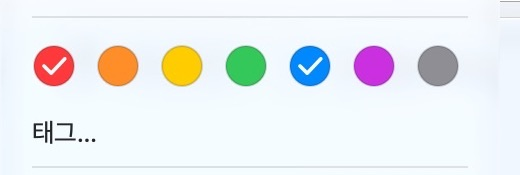
색상표로 내 폴더 색 만들기
폴더를 우클릭하고 폴더 색상 → 사용자 지정 색상…을 누릅니다. 색상표 열기…에서 색을 고르고 적용하세요. 기본 8가지 색과 기본 색상 복원도 제공하며 여러 폴더에 함께 적용할 수 있습니다.


폴더 가운데 이미지 넣기
폴더 이미지 → 이미지 파일 선택…에서 ICNS(Mac), ICO(Windows), PNG 등의 이미지를 선택합니다. 복사한 이미지나 아이콘 파일은 이미지 붙여넣기로 추가할 수 있습니다.
폴더의 윤곽은 유지하고 앞면 중앙에 이미지를 배치합니다. 흰색 사각 받침 없이 이미지의 투명 배경을 유지하며, 빈 부분에는 폴더 색이 그대로 보입니다. 은은한 그림자는 이미지 모양을 따릅니다. 삽입 이미지 제거는 가운데 이미지만 없앱니다. 폴더 색상과 이미지는 FileDesk의 표시 설정이며 Finder 태그와는 별개입니다.
즐겨찾기 항목의 우클릭 메뉴에서는 즐겨찾기 아이콘 색상·글자 색상을 따로 지정하고 사용자 즐겨찾기를 제거할 수 있습니다.
07 / APPEARANCE
편안한 색과 익숙한 스타일로.
FileDesk 스타일의 오른쪽 위 설정(톱니바퀴)에서 테마와 시스템·라이트·다크 모드를 고릅니다. 아래 버튼을 누르면 실제 테마 화면을 비교할 수 있습니다.

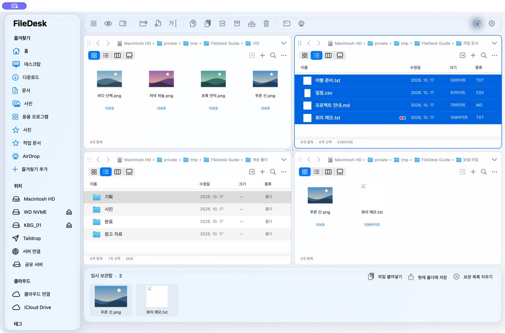
설정의 사용자 지정 색상에서 macOS 색상표를 엽니다. 선택한 색은 저장되며 라이트·다크 모드의 가독성을 위해 강조색 밝기를 조정합니다. 사이드바 글자는 밝은 화면에서 검정, 어두운 화면에서 흰색으로 유지합니다.

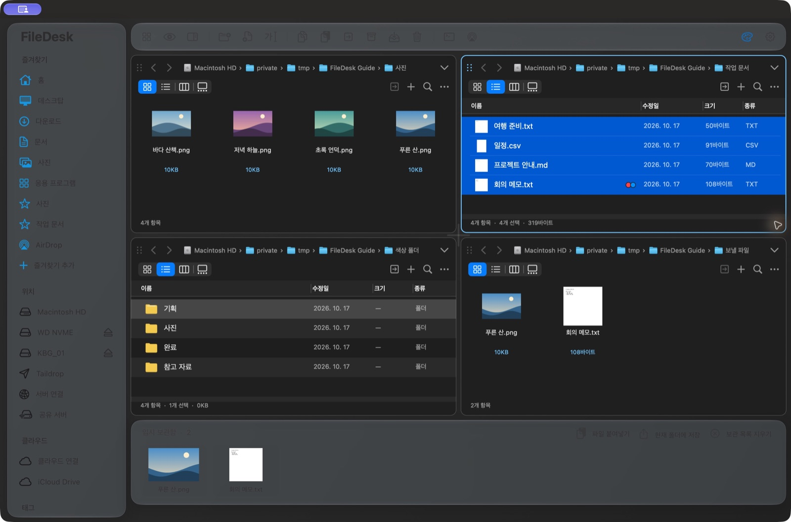
세 가지 파인더 스타일
보기 → 파인더 스타일에서 FileDesk·맥 파인더·윈도우 탐색기 스타일을 선택합니다. 모든 스타일에서 분할과 탭을 사용할 수 있습니다. 상단 FileDesk 도구 막대와 하단 임시보관함은 FileDesk 스타일에서만 표시합니다. 윈도우 탐색기 스타일은 아래에 파일·폴더 수와 남은 용량을 표시합니다.
설정에서 도구 막대를 아이콘 + 이름 또는 아이콘만으로 바꾸고 버튼별 표시 여부를 저장할 수 있습니다. 메뉴 언어는 한국어·영어·일본어·독일어·프랑스어·중국어 간체·번체를 지원합니다.
08 / CONNECTED DRIVES
연결한 드라이브도 현재 창에서.
클라우드 연결
- 드라이브를 표시할 패널을 먼저 클릭합니다.
- Google Drive·OneDrive·pCloud·Dropbox의 공식 동기화 앱에서 먼저 로그인합니다.
- 왼쪽 클라우드 연결에서 찾은 동기화 폴더를 선택합니다. 목록에 없으면 다시 찾기를 누르거나 폴더를 직접 지정합니다.
- 폴더를 열면 선택한 메인 패널에 파일과 폴더가 나타납니다. 동기화 상태는 공식 앱에서 관리합니다.
별도 동기화 앱 없이 연결하려면 고급: 직접 로그인… → 계정 추가…에서 서비스를 선택하고 브라우저에서 로그인으로 권한 동의를 완료합니다. 직접 연결한 계정은 왼쪽 메뉴에서 다시 열 수 있습니다.
설정 창은 연결을 관리하는 곳입니다. 파일 탐색, 폴더 이동, 업로드·다운로드는 패널에서 합니다. 계정 정보는 로컬에 암호화해 저장하며 일시적인 연결 오류만으로 계정을 삭제하지 않습니다. 서비스에서 권한을 철회하거나 재인증을 요구하면 다시 로그인해야 합니다.
서버 연결
Dropbox 연결… 버튼으로 Dropbox 브라우저 로그인을 시작할 수도 있습니다. 인증 키 등록 없이 로그인하고 승인하면 선택한 패널에 열립니다. 기본 개인 공간을 지원합니다.
- 표시할 패널을 클릭하고 왼쪽 서버 연결을 엽니다.
- 프로토콜, 주소, 사용자 이름 등 서버 정보를 입력합니다. SFTP는 암호를 비우면 터미널의 ssh 설정(~/.ssh/config의 호스트 별칭, SSH 에이전트, 키)을 그대로 사용하고, 필요하면 개인 키를 직접 선택할 수도 있습니다.
- 연결하면 선택한 패널에서 서버 폴더를 탐색합니다. 주소 프로필을 저장할 수 있으며 암호는 프로필에 저장하지 않습니다.
SMB·WebDAV·NFS·AFP는 macOS가 볼륨으로 연결합니다. FTP·FTPS·SFTP는 원격 목록에서 파일과 폴더를 업로드·다운로드합니다. 전송 중 상태 줄에서 진행률·전송량·남은 시간을 확인하고 취소할 수 있습니다. 여러 항목은 한 번에 병렬로 보내며(설정 → 전송에서 동시 전송 수 조절), 같은 계정 안의 클라우드 복사는 서비스 서버에서 바로 처리합니다. 멈춘 전송은 같은 항목을 다시 보내면 남은 파일만 이어서 보냅니다. SFTP는 등록된 서버 키를 확인합니다. 서버의 삭제는 휴지통이나 실행 취소로 복구할 수 없습니다.
인증 앱은 프로덕션 상태지만 공개 검증은 아직 완료되지 않았습니다. 미확인 앱 안내와 사용자 수 제한이 남을 수 있습니다. OneDrive·pCloud의 실제 연결 가능 여부는 계정·서비스 정책에 따라 확인이 필요합니다. 연결된 클라우드(공식 동기화 앱 폴더, iCloud Drive, 직접 로그인한 계정)와 서버, 실행 중인 공유 서버는 왼쪽 위치에 표시됩니다. 새 연결은 왼쪽 연결의 클라우드 연결·서버 연결·공유 서버·Taildrop에서 설정합니다. 위치의 항목을 오른쪽 클릭하면 이름 변경…으로 표시 이름을 바꿀 수 있어 Google Drive 계정을 여러 개 연결해도 구분하기 쉽고(비워 두면 기본 이름), 연결 해제…로 바로 해제할 수 있습니다. 클라우드·서버의 파일과 공식 앱의 로그인은 그대로 유지됩니다. 클라우드는 서비스별 아이콘으로, NAS는 제조사(예: Synology) 아이콘으로 표시합니다. 두 창 사이에서 클라우드·서버·로컬 항목을 드래그하면 복사됩니다. 서버나 클라우드가 포함되면 이동 대신 복사만 하며, 원본은 그대로 남습니다.
09 / SEND TO YOUR DEVICES
Taildrop으로 내 다른 기기에 보내세요.
Mac에서 선택한 파일을 Tailscale에 연결된 내 다른 기기로 전송합니다. Windows PC로 자료를 보낼 때도 사용할 수 있습니다.
먼저 준비하세요
- 보내는 Mac과 받는 기기에 Tailscale을 설치하고, 본인 계정으로 로그인해 연결을 켭니다.
- Tailscale 관리 콘솔의 General 설정에서 Send Files가 켜져 있는지 확인합니다.
- 현재 Taildrop은 본인 소유의 개인 기기 사이에서 사용합니다. 다른 사용자 소유 기기와 태그가 지정된 기기는 제한됩니다. 설정의 전송 섹션에서 왼쪽 메뉴에 Taildrop과 LocalSend를 각각 표시할지 선택할 수 있습니다.
서비스 준비 조건: Tailscale 공식 Taildrop 안내
FileDesk에서 전송하기
- 보낼 파일 또는 폴더를 선택합니다.
- 우클릭 Taildrop으로 보내기… 또는 왼쪽 Taildrop을 누릅니다.
- 받을 기기 목록에서 온라인 기기를 선택합니다. 필요하면 파일 선택…으로 대상을 다시 고릅니다.
- 보내기를 누르고 완료 상태를 확인합니다. 수신 파일은 받는 기기의 Tailscale에서 확인합니다.

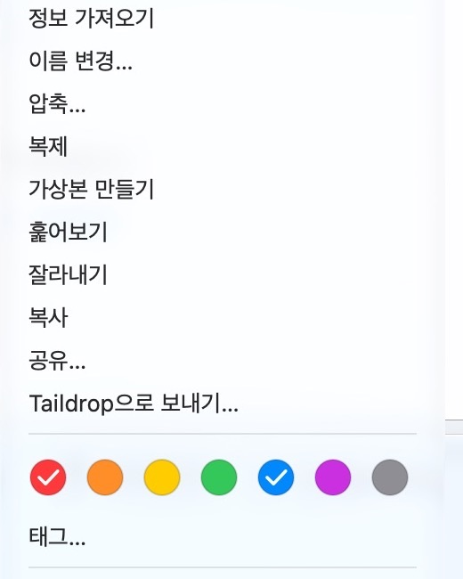
폴더는 ZIP으로 묶어 보냅니다. 일반 파일과 전송되는 ZIP의 이름은 한글 자모 분리를 줄이도록 조합형 이름으로 정규화합니다. 원본 이름은 바꾸지 않습니다. ZIP 내부 경로와 받는 앱의 처리 방식은 별개입니다.
받을 기기가 없으면 양쪽 연결과 Send Files 설정을 확인한 뒤 새로 고침하세요. FileDesk는 Tailscale이 수신을 허용한 기기만 표시합니다. Taildrop은 FileDesk의 클라우드 계정 연결과 별개의 기능입니다.
AirDrop
왼쪽 AirDrop은 Finder의 AirDrop 화면을 엽니다. 파일·폴더를 선택한 뒤 상단 AirDrop 또는 공유 메뉴를 사용하면 macOS 시스템 전송 창에서 주변 Apple 기기로 보낼 수 있습니다.
10 / ARCHIVES
압축 파일의 내용부터 확인하세요.
파일을 선택하고 압축으로 ZIP 또는 TAR.GZ를 만듭니다. 압축 파일은 내부 목록·검색으로 내용을 확인하고 전체를 해제할 수 있습니다. 한글 ZIP 이름, 앱 내부 링크와 실행 권한, 단일 GZ·BZ2 파일 해제를 지원합니다. 암호화·손상된 파일 등은 형식에 따라 처리되지 않을 수 있습니다.
11 / WORKSPACE & TOOLS
반복하는 작업은 한 번에 준비하세요.
작업 공간
패널 배치와 폴더 위치는 자동 복원됩니다. 왼쪽 현재 배치 저장으로 이름을 붙여 저장하면 자주 쓰는 조합을 다시 열 수 있습니다.
경로와 터미널
패널의 … 또는 경로 우클릭 메뉴에서 현재 폴더 경로와 선택한 여러 항목의 경로를 복사합니다. 현재 폴더에서 터미널 열기로 작업 위치에서 바로 시작할 수 있습니다.
비교와 중복 검색
왼쪽 도구 메뉴에서 중복 파일 검색·문서 비교·폴더 비교를 엽니다. 검색 결과와 차이를 확인한 뒤 처리하며, 폴더 비교에서는 없는 항목을 복사할 수 있습니다. 파일 메뉴의 추가 작업에서 SHA-256을 계산합니다.
위치와 즐겨찾기
외장 디스크·설치용 디스크 이미지·네트워크 볼륨 옆 추출 버튼으로 마운트를 해제합니다. 시스템·내장 디스크는 제외합니다. 이동 메뉴에는 기본 위치, 최근 폴더 15개, 상위 폴더·시동 디스크·경로 입력이 있습니다.
일반판의 터미널 열기는 macOS 기본 Terminal을 사용합니다. 다른 터미널 앱 선택은 Pro 전용입니다.
12 / REFERENCE
전체 기능 한눈에 보기
| 기능 | 제공 내용 |
|---|---|
| 파일 탐색 | 13가지 배치·최대 6개 패널·분할 크기 조절·패널별 탭·아이콘/목록/열/갤러리·클릭 경로·뒤로/앞으로/상위 |
| 파일 작업 | 새 파일/폴더·복사/이동/복제·드래그 앤 드롭·휴지통·로컬 작업 실행 취소/다시 실행·최대 30단계·재시작 후 유지 |
| 검색 | 로컬 패널 이름/태그·하위 폴더 포함·여러 검색어·!제외어·숨김 표시·이름/수정일/크기/종류 정렬·폴더 먼저 옵션 |
| 임시보관함 | 파일·폴더 드롭/붙여넣기·현재 로컬 폴더로 복사·드래그 꺼내기·플로팅 창·목록 유지 |
| 고급 이름 변경 | 실시간 미리보기·기본 이름·접두어/접미어·찾기/바꾸기/삭제·정규식·번호/자릿수·수정일·대소문자·규칙 저장 |
| 서버 | SMB/WebDAV/NFS/AFP 마운트·FTP/FTPS/SFTP 탐색·파일/폴더 업로드/다운로드·암호 제외 프로필 |
| 클라우드 | Google Drive/OneDrive/pCloud/Dropbox 공식 동기화 폴더·고급 브라우저 로그인·여러 계정·폴더 탐색/생성·파일/폴더 전송·CloudStorage/iCloud |
| 압축 | ZIP/TAR.GZ 생성·내부 목록/검색/해제·한글 ZIP·앱 링크/권한·GZ/BZ2 단일 파일 해제 |
| 도구 | Quick Look·정보·Finder 태그·SHA-256·터미널/Finder·문서/폴더 비교·중복 검색 |
| 작업 공간 | 배치/위치 자동 복원·이름을 붙여 저장 |
| 테마 | 7가지 기본 색·사용자 지정 색상표·시스템/라이트/다크·설정 저장 |
| 폴더 꾸미기 | 8가지 기본 색·사용자 지정 색·중앙 이미지 배지·ICNS/ICO/일반 이미지·클립보드·기본 복원 |
| 위치 관리 | 외장/설치 이미지/네트워크 추출·시스템/내장 디스크 제외 |
| 이동 메뉴 | 기본 위치·최근 폴더 15개·상위/시동 디스크·경로 입력 |
| 경로와 터미널 | … 및 경로 우클릭·여러 항목 경로 복사·현재 폴더 터미널 |
| 도구 막대 | 아이콘+이름/아이콘만·버튼 표시/숨김·너비에 맞춘 줄바꿈·마우스 오버 |
| AirDrop | Finder AirDrop 열기·선택 항목의 macOS 전송 창 |
| Taildrop | Tailscale 온라인 기기 선택·파일 전송·폴더 ZIP·전송 이름의 한글 정규화 |
일반판 1.19 기준입니다. 기존 화면 예시는 이전 버전에서 촬영했으며 현재 메뉴 배치와 일부 다를 수 있습니다. Pro 안내는 출시 예정 기능이며 현재 공개 일반판에 포함되지 않습니다.
일반판 1.19 · 지금 사용 가능
일반판 1.19의 새로운 편의기능과 주요 도구
탐색부터 동기화·검색·정리까지, 아래 기능은 지금 내려받는 일반판 1.19에 포함됩니다.
도구막대를 직접 꾸미기
버튼을 드래그해 순서를 바꾸고 파일·폴더·앱을 도구막대에 드롭해 바로가기로 등록합니다. 우클릭으로 표시 이름을 바꾸거나 제거하며, 원본은 변경하지 않습니다.
버튼을 원하는 위치로 드래그하세요. 파일·폴더·앱을 빈 곳이나 버튼 사이에 드롭하면 런처가 됩니다. 폴더는 활성 파일 창에서, 파일·앱은 macOS를 통해 엽니다. 등록 항목을 우클릭해 이름 변경·제거·기본 순서 복원을 선택합니다.
폴더도 임시 보관함에
파일뿐 아니라 폴더도 드래그·붙여넣기로 보관하고 현재 폴더에 복사합니다. 보관 목록에서 제거해도 원본 폴더와 내부 파일은 유지됩니다.
설정에서 임시보관함을 켠 뒤 폴더를 보관함으로 드래그하세요. 폴더를 클릭해 열고, 현재 폴더에 저장으로 복사합니다. 제거는 보관 참조만 지웁니다. 폴더 내부 파일은 원래 위치에 남습니다.
더 가벼운 미리보기
아이콘을 표시 크기에 맞춰 보관하고 썸네일 캐시 한도를 96MiB에서 48MiB로 줄였습니다. 메모리 부족 시 캐시와 숨겨진 미리보기를 해제합니다. 전체 점유율은 작업에 따라 달라집니다.
별도 설정 없이 적용됩니다. 캐시 한도는 앱 전체 메모리 한도가 아닙니다. 큰 이미지 편집·여러 창·미디어 재생 중에는 추가 메모리가 필요합니다.
탐색과 선택의 흐름 유지
두 창을 연동해 탐색하고 탭을 고정·복원합니다. 스페이스 미리보기에서 ⌘⌫로 삭제하면 다음 파일로 이어지며, 마지막 파일은 이전 파일로 이동합니다.
두 폴더를 열고 창 연동 탐색을 켜서 같은 하위 경로로 이동합니다. 탭 메뉴에서 고정하거나 닫은 탭을 복원하고, 미리보기 상태에서는 방향키로 다음 파일을 확인합니다.
폴더 동기화와 비교
하위 폴더까지 비교하고 단방향·양방향으로 동기화합니다. 실행할 변경 목록을 먼저 확인하고 제외·삭제 규칙을 저장합니다. 이미지 비교와 외부 비교 앱 연결도 지원합니다.
도구의 폴더 비교·동기화에서 두 폴더와 방향을 고릅니다. 비교 결과의 복사·덮어쓰기·삭제 목록과 제외 규칙을 확인한 뒤 실행하세요. 원격 저장소의 자동 동기화와는 별개입니다.
서버와 전송 관리
S3·Backblaze B2·Rackspace 연결, Dropbox 공유 링크, 원격 편집 변경 감지·업로드와 충돌 확인을 추가했습니다. 전송 대기열 순서·속도 제한·활동 기록을 관리합니다.
서버 연결에서 S3·B2·Rackspace 등 유형과 계정을 설정합니다. 원격 파일은 원격 편집으로 열어야 저장 후 업로드를 감지하며, 충돌하면 확인이 필요합니다. 전송 대기열에서 순서와 속도를 조절합니다.
내게 맞는 작업 환경
임시보관함을 설정에서 켜거나 끄고(기본값: 사용), 단축키를 바꿉니다. 빠른 실행, 사용자 명령, 즐겨찾기 iCloud 동기화와 macOS 기본 터미널 열기를 지원합니다.
설정에서 임시보관함·단축키를 바꾸고 도구에서 빠른 실행·사용자 명령을 엽니다. 사용자 명령은 실행할 프로그램과 인수를 확인한 뒤 저장하고, 즐겨찾기 동기화는 같은 iCloud 계정에서 사용합니다.
기본 앱으로 열기와 정보
더블클릭으로 기본 앱에서 엽니다. 연결된 앱이 없으면 macOS의 앱 선택 절차를 사용합니다. Finder 정보 가져오기에서 파일 정보와 연결 앱을 확인·변경합니다.
파일을 더블클릭하면 macOS 기본 앱으로 엽니다. 우클릭 정보 가져오기에서 Finder의 다음으로 열기를 바꾸고, 같은 형식 전체에 적용하려면 모두 변경을 사용합니다.
파일 정리와 기본 압축
순서 있는 이름 변경 규칙과 날짜·위치 삽입, 앱 잔여 파일 검토, 압축 내부 탐색·미리보기·선택 해제를 제공합니다. 기본 ZIP·TAR.GZ 압축은 일반판 기능입니다.
여러 파일의 이름 변경 규칙을 순서대로 추가하고 결과를 먼저 확인합니다. 압축 만들기에서 ZIP 또는 TAR.GZ를 선택하고, 압축 내부에서는 원하는 항목을 선택해 해제합니다. 앱 정리는 제거할 잔여 파일을 검토한 뒤 실행합니다.
필요한 파일만 빠르게 찾기
파일 내용·크기·날짜 등 조건으로 검색하고 원격 폴더도 재귀 탐색합니다. 빠른 선택에서 이름·확장자 등 조건에 맞는 파일을 선택하거나 제외합니다.
내용 검색에서 검색어와 크기·날짜 조건을 정하고 검색 범위를 선택합니다. 빠른 선택에서는 이름·확장자 조건으로 현재 목록의 선택을 추가하거나 제외합니다.
파일 창에서 Git 작업까지
변경 상태를 확인하고 파일 추가·커밋·푸시·풀을 실행합니다. 저장소 작업을 파일 탐색 흐름 안에서 이어갑니다.
Git 저장소 폴더에서 도구의 Git 창을 열고 변경 파일을 확인합니다. 필요한 파일만 추가하고 메시지를 작성해 커밋하며, 푸시·풀에는 해당 원격 저장소의 접근 권한이 필요합니다.
출시 예정
FileDesk Pro
이 절의 기능은 Pro 전용이며 출시 예정입니다. Pro는 개인 용도도 유료이고 1기기 1라이선스가 원칙입니다. 현재 일반판 다운로드에는 편집기·변환 도구·고급 압축·시간 제한 인터넷 공유가 포함되지 않습니다.
아래 이미지는 Pro 1.19 테스트판의 실제 화면입니다. 홈페이지에서 고른 언어와 같은 앱 화면을 보여 줍니다. 이미지를 누르면 확대됩니다. 앱에서는 설정 → 메뉴 언어에서 한국어·영어·일본어·독일어·프랑스어·중국어(간체/번체)를 선택하며, 열린 편집창에도 적용됩니다. Pro는 출시 예정입니다.
이미지 편집·변환
이미지를 선택해 이미지 편집·변환을 열고 자르기·회전·크기를 조절합니다. 형식 버튼을 누른 뒤 저장·변환을 실행하세요. 흑백·반전은 다시 누르면 해제됩니다. 배경 제거는 피사체가 뚜렷한 사진에 적합하며 투명 결과는 PNG로 저장합니다. 인식 실패 시 다른 편집과 원본 미리보기를 유지합니다.

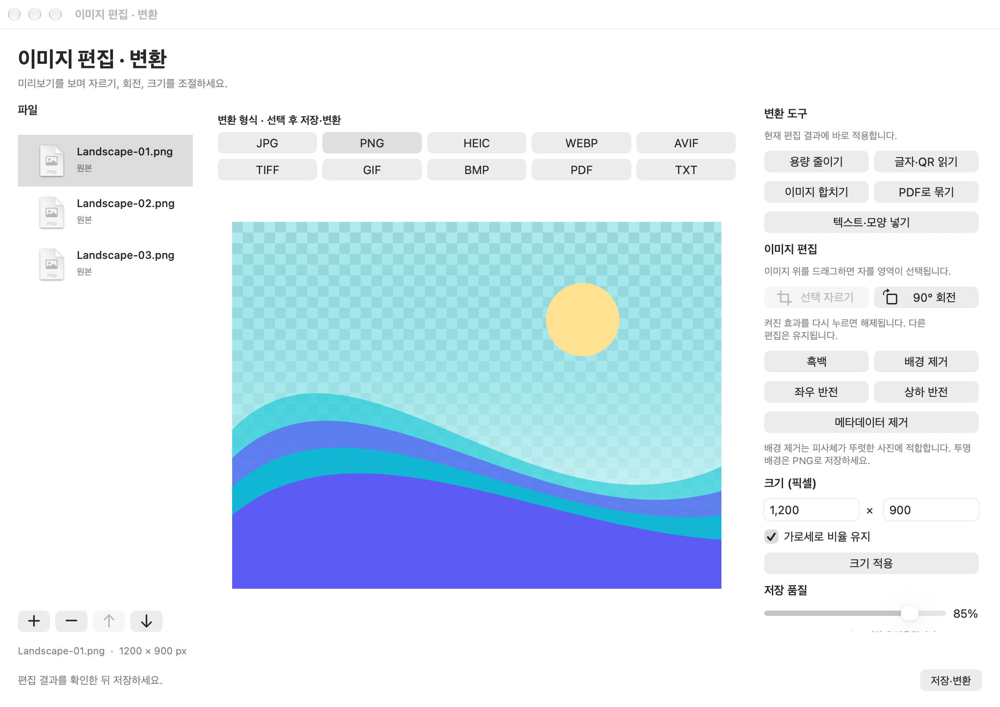
PDF 페이지·주석 편집
PDF 편집창에서 페이지를 선택해 순서·회전·삭제를 조정하고 필요한 주석을 추가합니다. 글·이미지·서명 등을 선택해 이동·크기 변경·삭제한 뒤 새 파일로 저장합니다.

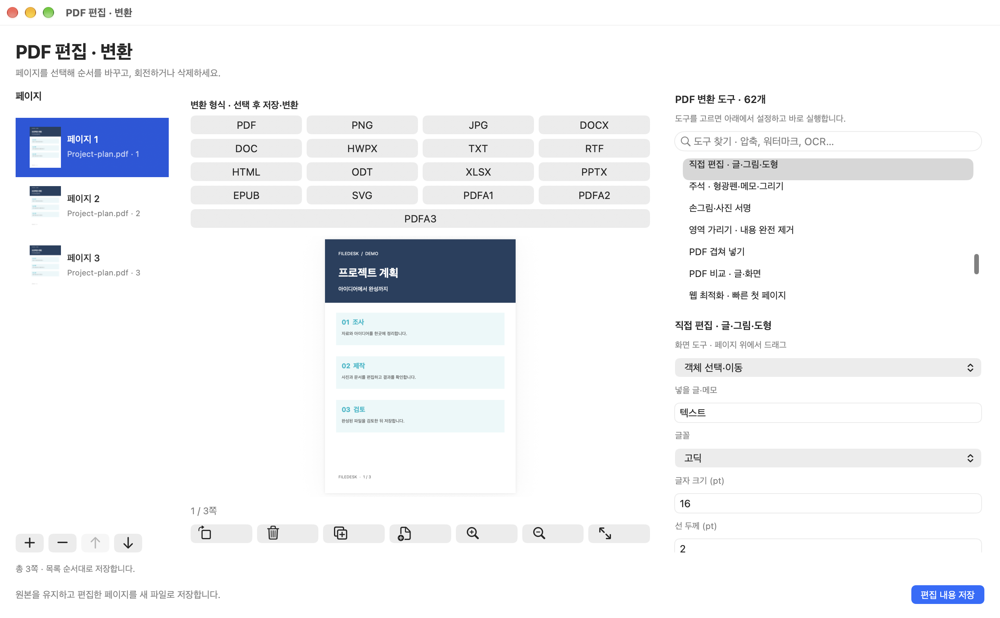
PDF 변환·인식·추가 도구
PDF 편집창에 표시된 변환·추가 도구에서 원하는 출력 형식이나 OCR 등을 바로 고릅니다. 페이지 범위·언어·암호 등 해당 옵션을 확인하고 실행하세요. 지원 형식과 변환 한계는 아래 이용 조건을 확인하세요.

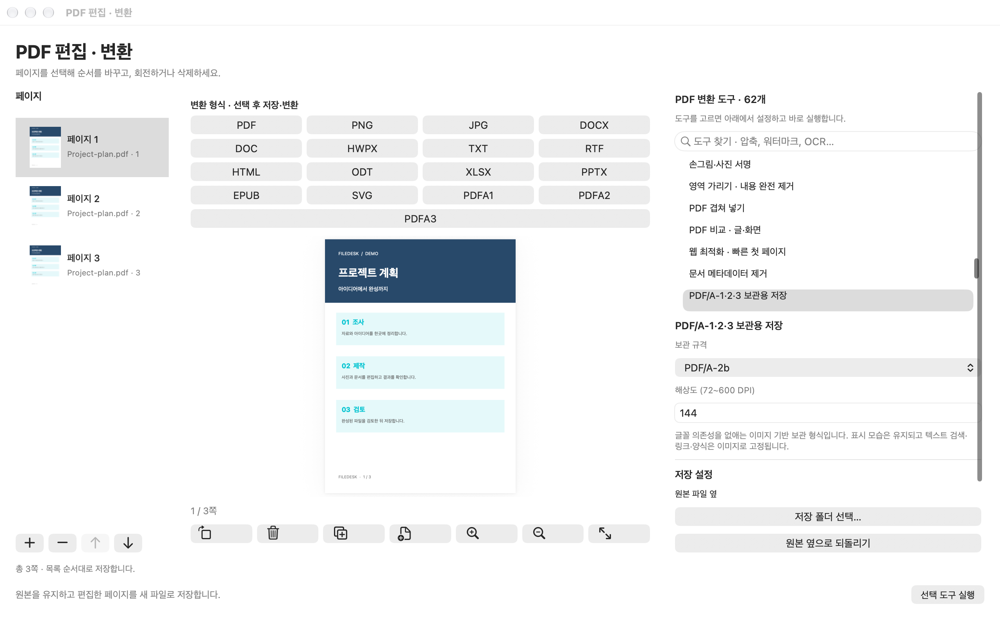
오디오·스테레오·벨소리
오디오 편집창에서 파형 구간을 선택하고 전체·왼쪽·오른쪽 채널을 고릅니다. 스테레오 L/R 파형을 따로 확인하며 편집 후 미리듣고 저장합니다. 벨소리는 30초 이내 구간을 M4R로 내보내며 기기로 전송·등록하는 과정은 별도입니다.

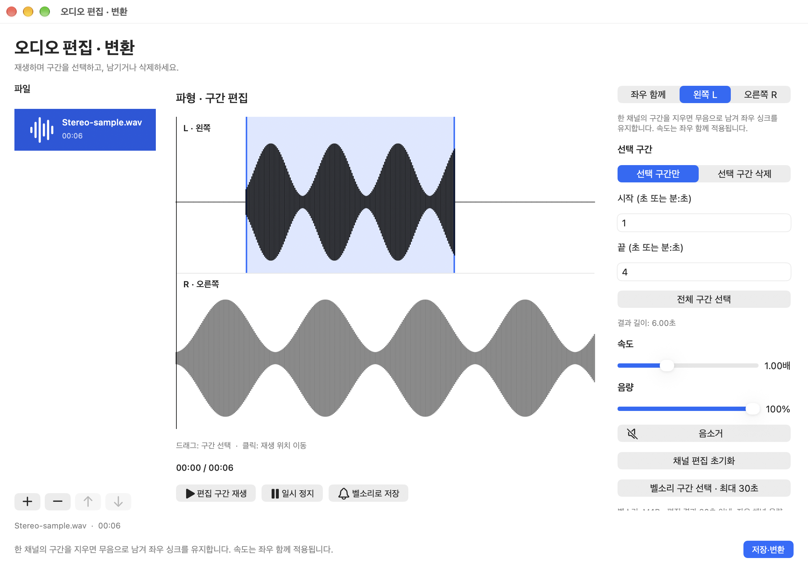
영상 편집·변환
영상 미리보기에서 시작·끝 구간과 속도·음량을 설정합니다. 출력 형식, 오디오 추출·GIF·장면 캡처 등 도구를 선택하고 저장 폴더를 확인한 뒤 실행합니다.

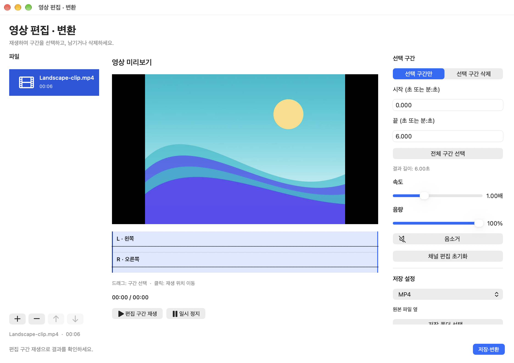
문서·자막·일괄 작업
변환 도구에서 지원하는 문서·자막 형식과 대상 파일을 선택합니다. 여러 파일을 일괄 처리할 때는 출력 형식과 저장 폴더를 확인하고 진행 결과에서 생성 파일을 엽니다.

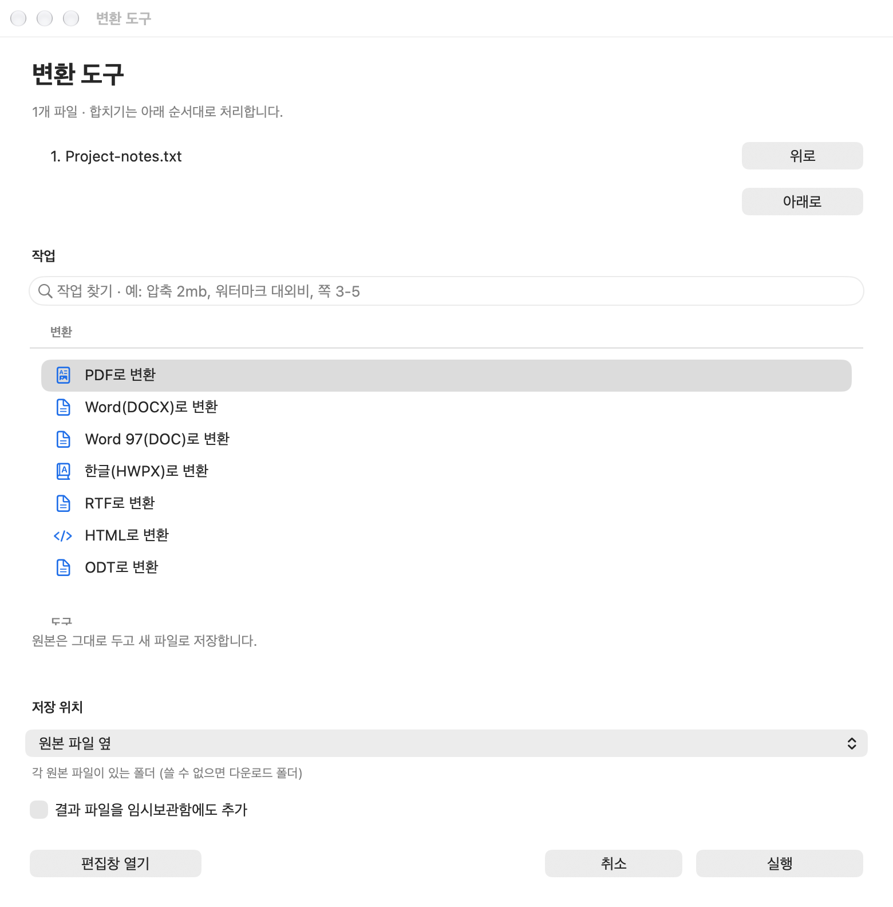
고급 압축 만들기·해제
압축 만들기에서 출력 확장자를 먼저 고르면 그 형식에 맞는 암호·분할·압축 수준 등이 표시됩니다. 고급 압축 엔진이 포함되어 별도 앱 설치는 필요 없으며, 해제할 때 암호·분할 파일과 저장 위치를 확인합니다.

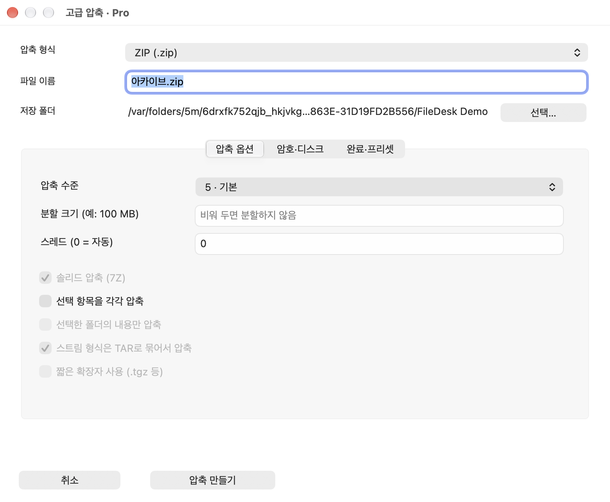
시간 제한 인터넷 공유
파일·폴더를 여러 개 선택해 시간 제한 인터넷 공유를 엽니다. 파일·폴더 추가 또는 드래그로 목록을 늘리고 필요 없는 항목은 목록에서 제거합니다. 공유 시간을 정해 시작한 후 외부 확인이 끝난 링크를 전달하세요. 여러 파일·폴더는 ZIP 사본으로 공유하고 접속·다운로드 기록 탭에서 기록을 확인합니다.

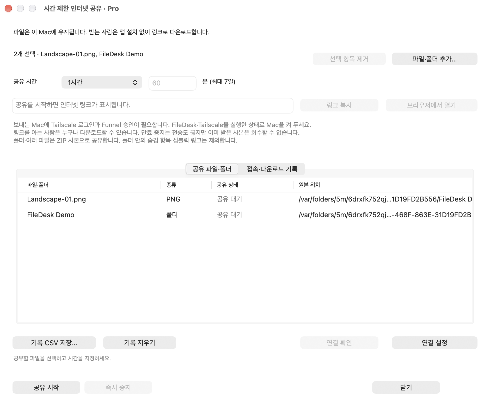
원하는 터미널 앱 선택
Pro 활성화 후 설정의 터미널 항목에서 설치된 앱을 고르거나 앱을 직접 지정합니다. 현재 폴더에서 터미널 열기나 SSH 작업을 실행해 선택한 앱으로 연결합니다.

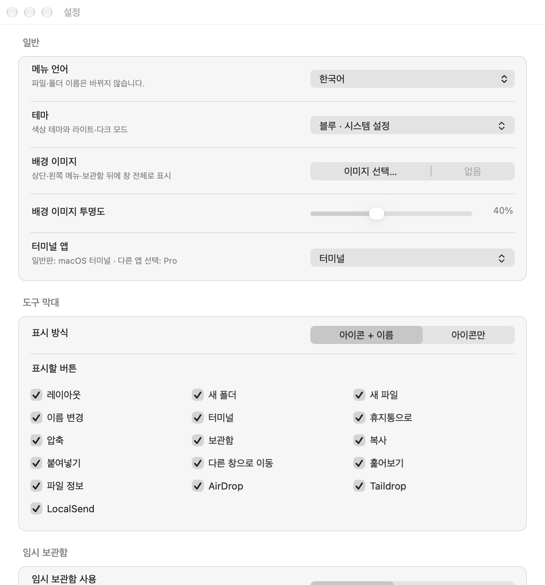
콜라주 모양·사진 배치·글자 넣기
기존 사각형 격자 36종에 혼합 모양 템플릿 12종을 추가했습니다. 격자 배치와 믹스 템플릿을 모두 선택할 수 있습니다. 칸 크기는 모서리 드래그·숫자로 조절하고 Shift 드래그로 비율을 유지하며, 왼쪽 목록의 다중 선택도 지원합니다. 이미지 합치기에서 최대 20장을 넣으면 완성형 믹스 템플릿이 사진을 자동 배치합니다. 12종에는 원·하트·별·아치를 조합한 배치, 사선 모자이크, 물결 분할, 꽃잎 바람개비, 중앙 원형 배치, 기울어진 폴라로이드, 직접 그린 꽃 장식, 라운드 타일과 엽서가 있습니다. 사진 수에 맞춰 모양·크기·배경색·장식을 함께 적용합니다. 기존 36개 격자는 별도 선택합니다. 사진 칸을 클릭하고 네 모서리 손잡이를 드래그해 크기를 바꿉니다. Shift 드래그는 현재 비율을 유지합니다. 모양 탭에서 가로·세로 픽셀을 입력하고 비율 유지 또는 크기 초기화를 선택할 수도 있습니다. 칸 이동은 프레임 자체를, 구도 이동은 칸 안의 사진을 옮깁니다. 왼쪽 목록은 ⌘ 클릭으로 다중 선택, ⇧ 클릭으로 범위 선택, ⌘A로 전체 선택합니다. 선택한 사진을 함께 제거·순서 변경·모양 변경·자동 맞춤·크기 조절하며 실행 취소로 복원합니다. 사진을 교환해도 칸 모양과 크기는 유지됩니다. 글자 탭에서는 Mac 설치 글꼴·크기·색·정렬·회전·테두리·그림자를 조절하고 최대 20개 글상자(각 2,000자)를 넣습니다. 간격·여백·배경을 조절해 PNG/JPG로 저장하며 투명 영역은 PNG를 사용합니다. 원본은 변경하지 않습니다.

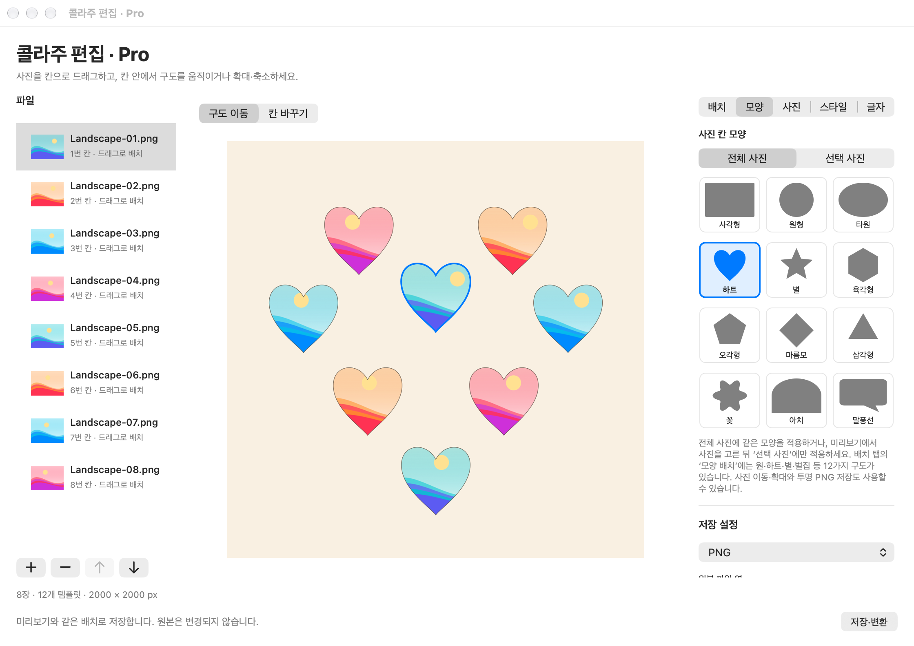

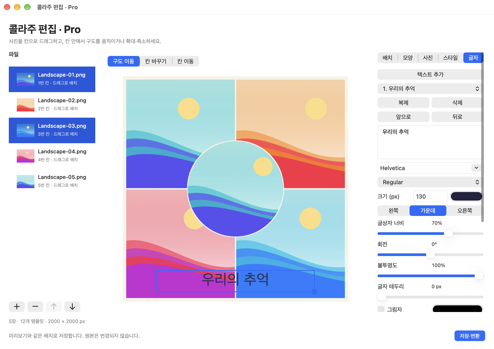

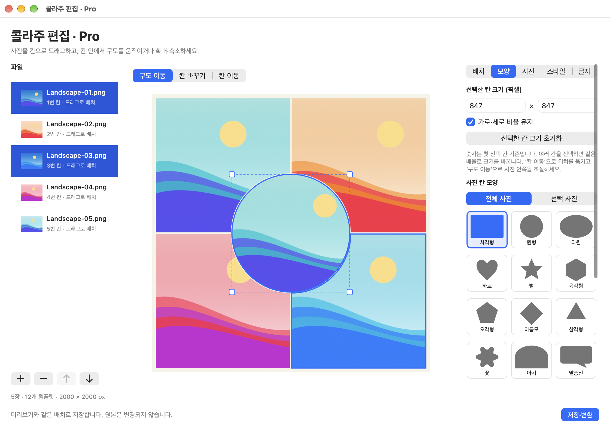
지원 범위와 이용 조건
PDF/A와 영역 가리기는 페이지를 이미지로 고정합니다. EPUB은 텍스트 기반, SVG는 이미지 기반이며 변환 시 원본 서식 보존에는 한계가 있습니다. 암호 해제에는 필요한 암호가 있어야 합니다. 송장 XML은 XRechnung 형식이며 한국 전자세금계산서 발행 기능은 아닙니다.
압축 옵션은 형식에 따라 다릅니다. RAR·WPRESS는 해제만 지원합니다. 독립적으로 사용 가능한 외부 엔진을 각 라이선스에 따라 포함합니다. 오디오 한 채널의 구간 삭제는 싱크 유지를 위해 무음으로 남습니다.
공유하는 Mac에 Tailscale 설치·로그인과 최초 Funnel 승인이 필요합니다. Mac을 켜고 FileDesk·Tailscale과 인터넷 연결을 유지해야 합니다. 접속 기록은 실명 확인이 아니며, 만료되거나 중지되어도 이미 받은 사본은 회수되지 않습니다.